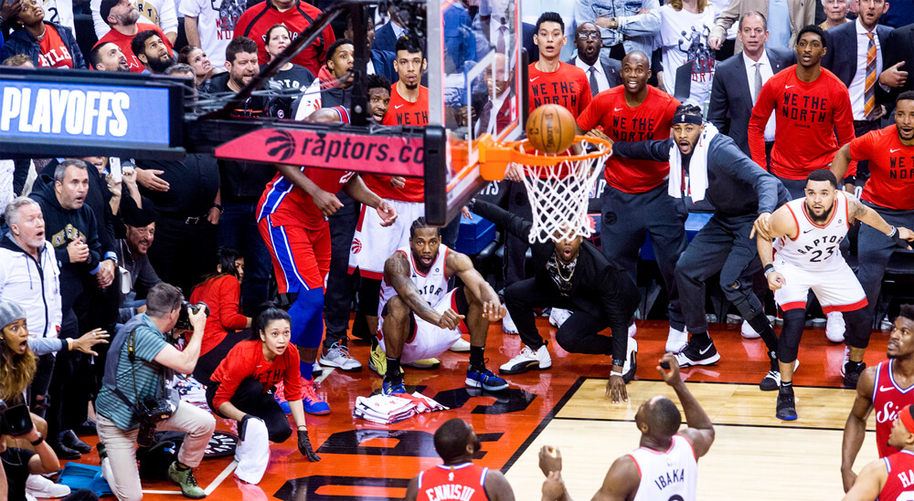

About This Project
In professional basketball, the final moments of a game often determine its outcome, and teams are increasingly relying on data to improve their decision-making during these particular situations. Our project focuses on analyzing NBA shot data, specifically in the 4th quarter's last minute, to uncover patterns that could inform coaches' strategies and highlight player's performances. This data is crucial for optimizing game plans, identifying player impact, and showing trends in high-pressure situations. Understanding where the most successful shots are taken and by who can lead to more informed decisions on the court, whether it's selecting the right shooter or determining the best area for shot attempts. Our findings will provide valuable insights into shot efficiency and shot selection under pressure, revealing opportunities to enhance game strategies.
Furthermore, during the formation of our project, we’ll be referencing a ton of resources to draw inspiration and build on to make our visualizations effective and innovative. We can draw from two reference papers by Can Sairoz and Siddhant Thakur that will give us the framework to provide a deeper analysis of shot outcomes in critical moments, incorporating elements from both statistical analysis and machine learning techniques.
About the Data
We will be using the NBA Shots dataset from Kaggle, with the original data being scraped off the the official NBA website. There are 26 attributes in this dataset, including two season attributes, each team’s unique ID, team name, each player’s unique ID, player name, position group, position, game data, each game’s unique ID, home team, away team, whether a shot was made or missed, shot made, description of shot type, points of the shot, court zone, side of the court, abbreviation of the side of the court, distance range of shot, x-coordinate of the shot, y-coordinate of the shoot, shot distance, quarter of the game, minutes remaining in the quarter, and seconds remaining in the quarter. The original dataset is too big for our purposes, as it incorporates all NBA regular season shot location data from the 03-04 season to the 23-24 season. The number of observations in the 23-24 season dataset is 218,701, which is still much too large. Using pandas, we were able to filter down the dataset to the last quarter of the game (51,983 observations) and to less than 1 minute of the quarter remaining, for a final total of 4,769 observations. With these, we are able to analyze late game shots specifically. Our final dataset is linked here
Gallery of Visualizations
This graph displays the shooting percentage that players have on different shot types in the final minute of the game in the 2023-2024 NBA Season, as well as the frequency with which each shot was taken. The standard jump shot was by far the most attempted shot, being taken 1359 times, but was also one of the least successful shots only going in about 26% of the time. The driving layup was another outlier in the data, being attempted much more than any other shot type of similar shooting percentage. It was notable that dunks were one of the most consistently successful shot types, with all dunks going in at least 69% or more of the time.
This graph displays all shots taken in the last minute of NBA games in 2023-2024 and whether or not they were madeThe user is able to filter which position took the shot using a dropdown menu. This graph shows very clearly that all players favor shoointg a 3-pointer instead of a long 2-pointer, but guards take 3-pointers much more commonly than power forwards and centers. Centers take the vast majority of their shots from right under the basket and they make their shots at a much higher rate than any other position. Forwards were the most versatile and tended to take shots from all over the court.
This graph displays all shots made in the last minute of NBA games and takes into account the shot distance and the shot percentage, based on the shot distance. The graph shows that the most successful shots are typically in the 0-35 feet range, with a significant drop after the mid-30s. A downside of this graph is that it doesn't indicate how many shots were attempted – this may give us strange outliers such as around 58 feet, which has a surprisingly high shot percentage.
This graph displays every shot taken in the last minute of a game in the 2023-2024 NBA season and whether or not the shot was made. The user can additionally filter by how many seconds were left on the clock when the shot went in. For example, if they wanted to see all buzzer-beaters, they could only show shots made with 0 seconds left on the clock. One interesting thing about the graph is that there is a very clearly outlined 3-point line which suggests that players will often shoot from a little further away if it can get them behind the line. There are also many shots near the basket, and that is where the most orange is on the chart signifying that closer shots tend to do better. Most of the super long shots are when there were 0 seconds left demonstrating that they are only taken when teams are out of time and desparate.
This scatter plot visualizes NBA teams’ performance in late-game situations by plotting the total number of shots attempted on the x-axis and the shooting percentage on the y-axis. The total shots reflect how often a team attempts shots in critical late-game scenarios, while the shooting percentage indicates the team’s accuracy under pressure. The plot reveals patterns in team behavior and performance. Teams with a high shooting percentage but fewer total shots may rely on selective, high-quality opportunities. On the other hand, teams with both a high shooting percentage and a high number of total shots are prolific and efficient, indicating strong late-game performance. Teams attempting many shots but with low accuracy could reflect desperation or poor shot selection under pressure, while those with low totals and percentages might indicate strategically avoiding late-game shooting of late-game shooting or struggles in these scenarios.
Summary
Overall we found a good assortment of data about shots taken in the last minute of NBA games. We got a look into which types of players take the most shots and from where, we saw which teams shot the most frequently and efficiently, and we saw which types of shots were taken the most often. One takeaway could be that the best possible shot at the end of a game is a dunk from about a foot away by a center on the Denver Nuggets, but this doesn’t account for how easy it could be to get a shot like that. In the future, we could try to compare data across multiple NBA seasons to see what trends change over time. This wasn’t possible for this project due to dataset size limitations, but could definitely be an interesting direction to take it.